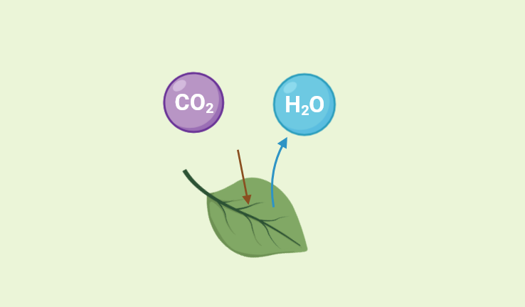
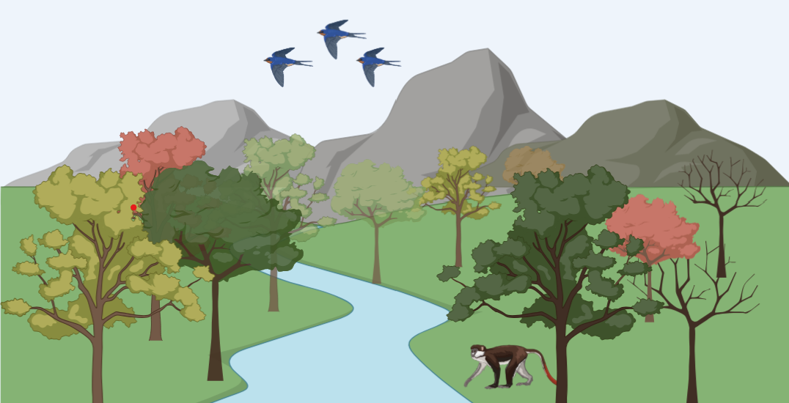
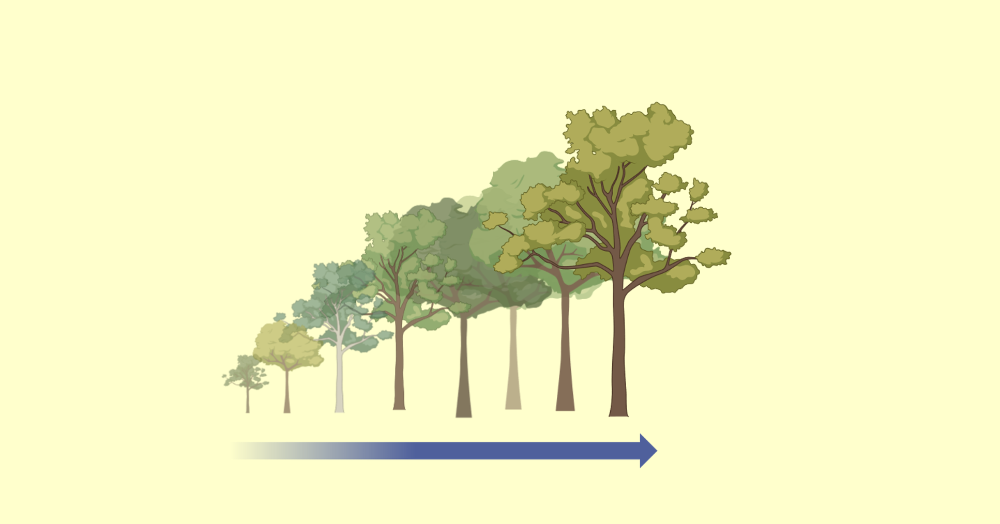
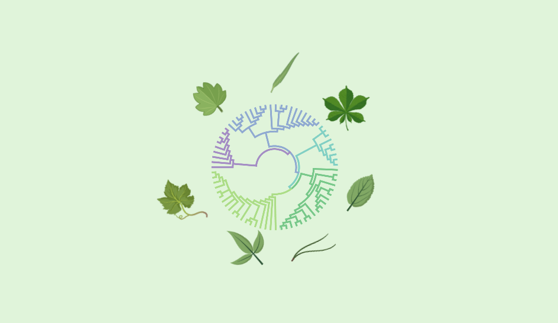

The research methodology at Treehouse follows a M3-philosophy: Measure, Model, Manage. Thus, research projects broadly fall into these categories. Here are some key projects being undertaken by the Treehouse team members.

We developed a new theory based on optimality principles to predict the stomatal and biochemical acclimation of leaves to drying soil and air.
Learn more
In this project, we are developing an eco-evolutionary vegetation model that can account for the adaptations of individual plants, plant species, and multi-species communities to climate change at multiple temporal and organizational scales.
Learn more
To understand how the dependence of individuals' size or state on their metabolic rates impacts the ecological performance of the community, we model the demographics of the community with structured population modelling. In this project, we developed a C++ numerical library for solving physiologically structured population models using seven different methods.
Learn more
Even as individuals may have evolved to respond optimally to their environment, the same optimality does not necessarily extend to the population level. Emergent population-level responses must then be studied using evolutionary theory. In this project, we derive a theory of evolution in continuously structured populations.
We are engaging with stakeholders in the Himalayan region to understand what ecosystem services do different kinds of stakeholders (such as the community, government, and industry) derive from an ecosystem, and what are their preferences and perceptions of how common resources should be managed.
We plan to set up "living labs", i.e., field sites for long-term monitoring of ecosystems across scales. This will form the basis for developing the our models.